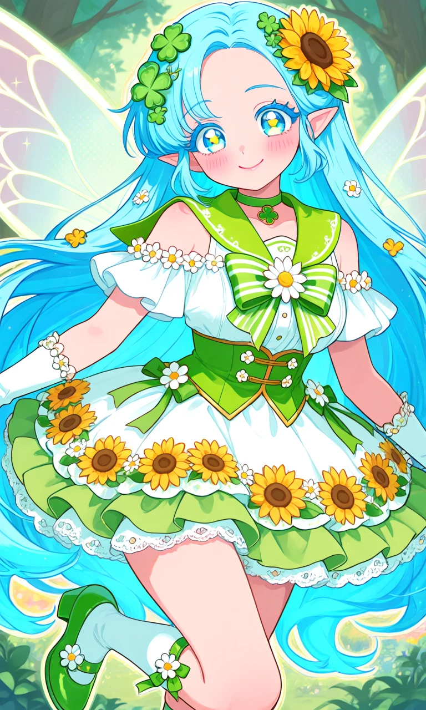
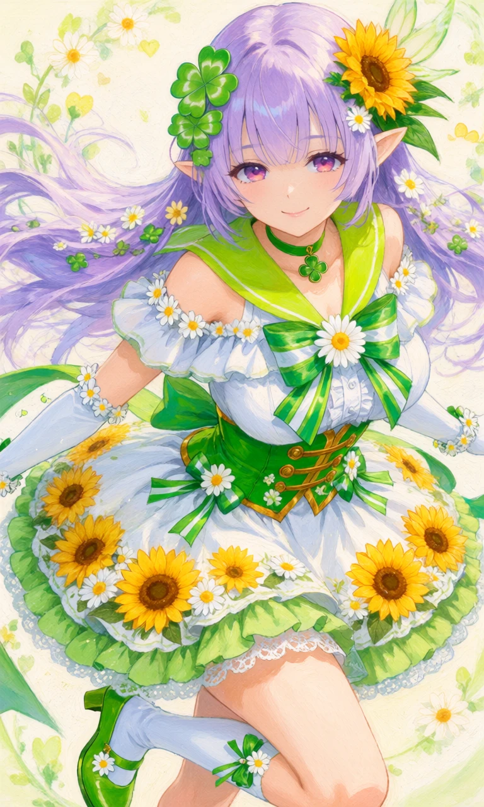

Clover & Sunshine

Outfit Prompt
Her outfit is a detailed magical girl outfit. An off-the-shoulder design with a white ruffled blouse underneath. A bright lime-green sailor-style collar with a V-shaped neckline. A large, prominent green and white striped bow with a white daisy at its center on the chest. The bodice is green with gold accents and small white flower decorations, featuring a corset-like front with gold clasps and buttons. Small daisy flowers line the off-shoulder sleeves and neckline. A green choker with a four-leaf clover pendant.
A short, fluffy, multi-layered skirt in white and green. The top layer is white with large printed sunflowers and daisies. The hem has green ruffles and white lace trim for extra volume. Green ribbons and bows accent the sides of the skirt.
The hair is decorated with green four-leaf clovers and a large sunflower on the right side. Additional small flowers and leaves are woven into the hair. Long white gloves that reach above the elbows, with small flower and pearl-like bracelets. White knee-high socks with green trim. Small green bows with white daisies wrapped around the tops of the socks. Cute green Mary Jane-style shoes with white flower decorations and small heels.
Dominant colors for the outfit: Fresh lime green, crisp white, with golden yellow accents from the sunflowers.
Motifs: Daisies, sunflowers, four-leaf clovers, hearts, and ribbons — creating a very Flower Fairy Knight vibe.
Outfit Examples



